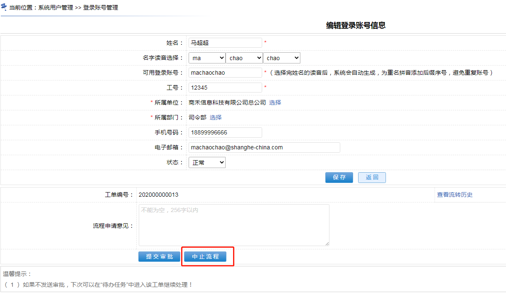

22.3.3、如何中止流程
什么是“中止流程”，怎么中止
“中止流程” != “终止流程”。
“终止流程”是指流程流转了所有的节点，自然结束归档。而“中止流程”是指让流程中途停止掉，一旦被中止，则该流程工单“被作废”。
只要流程模型图中，对某个节点配置了“中止流程”的操作路线，那么流程流转到该节点时，就能做中止操作！
例如：在添加用户时，发起流程后又不想继续流转了，此流程在“数据填报”节点上有“中止流程”的操作线路，此时便可对其进行中止。 
编程套路
中止流程 也是 流程流转，所以变成套路和“
22.3.2、如何流转流程
”章节的套路一模一样